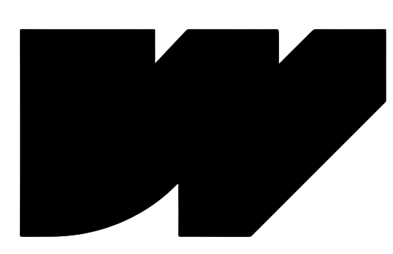

<!DOCTYPE html>
<html lang="en">

<head>
  <meta charset="UTF-8" />
  <meta name="viewport" content="width=device-width, initial-scale=1, shrink-to-fit=no" />
  <meta http-equiv="x-ua-compatible" content="ie=edge" />
  <title>WoW Work</title>
  <!-- MDB icon -->
  <link rel="icon" href="img/w.ico" type="image/x-icon" />
  <!-- Font Awesome -->
  <link rel="stylesheet" href="https://cdnjs.cloudflare.com/ajax/libs/font-awesome/6.0.0/css/all.min.css" />
  <!-- Google Fonts Roboto -->
  <link rel="stylesheet" href="https://fonts.googleapis.com/css2?family=Roboto:wght@300;400;500;700;900&display=swap" />
  <!-- MDB -->
  <link rel="stylesheet" href="css/mdb.min.css" />

  <style>
    .navbar .nav-link {
      color: #fff !important;
    }

    .navbar {
      background-color: #3333FF
        /* Same background color as the dark mask */
    }

    .custom-link {
      color: white;
      text-decoration: none;
      transition: none;
      cursor: pointer;
    }

    /* If needed, you can also style the link when it's hovered over */
    .custom-link:hover {
      background-color: #3333FF
    }
  </style>
  <!-- Navbar -->
  <nav class="navbar navbar-expand-lg navbar-dark d-none d-lg-block" style="z-index: 2000;">
    <!-- Container wrapper -->
    <div class="container-fluid">
      <!-- Navbar brand -->
      <a class="navbar-brand nav-link" href="https://wowwork.framer.ai/">
        
      </a>
      <a class="navbar-brand nav-link" href="https://wowwork.framer.ai/">
        
      </a>


      <!-- Toggle button -->
      <button class="navbar-toggler" type="button" data-mdb-toggle="collapse" data-mdb-target="#navbarButtonsExample"
        aria-controls="navbarButtonsExample" aria-expanded="false" aria-label="Toggle navigation">
        <i class="fas fa-bars"></i>
      </button>

      <!-- Collapsible wrapper -->
      <div class="collapse navbar-collapse" id="navbarButtonsExample">
        <!-- Left links -->
        <ul class="navbar-nav me-auto mb-2 mb-lg-0">

        </ul>
        <!-- Left links -->

        <div class="d-flex align-items-center">
          <a class="custom-link" href="https://wowwork.framer.ai/" role="button"
            style="color: white;" target="_self"><strong>Home</strong></a>

            <div class="dropdown">
              <a
                class="btn btn-primary dropdown-toggle"
                style="background-color: #3333FF;"
                href="#"
                role="button"
                id="dropdownMenuLink"
                data-mdb-toggle="dropdown"
                aria-expanded="false"
              >
                <strong>Solutions</strong>
              </a>
            
              <ul class="dropdown-menu" aria-labelledby="dropdownMenuLink">
                <li><a class="dropdown-item" href="https://wowwork.framer.ai/startups" target="_self">Staffing for startups</a></li>
                <li><a class="dropdown-item" href="https://wowwork.framer.ai/smbs" target="_self">Staffing for SMBs</a></li>
                <li><a class="dropdown-item" href="https://wowwork.framer.ai/platform" target="_self">Recruiter platform</a></li>
                <li><a class="dropdown-item" href="https://wowwork.framer.ai/community" target="_self">Community and Job board</a></li>
              </ul>
            </div>

            <a class="custom-link px-3 me-2" href="https://wowwork.framer.ai/contactus" role="button" 
              style="color: white;" target="_self"><strong>Contact us</strong></a>

          <a class="btn btn-link px-3 me-2" href="https://jocelynvelarde.github.io/calendly/" role="button"
            style="color: black; background-color: yellow;" target="_self"><strong>Schedule a meeting</strong></a>
            
        </div>
      </div>
      <!-- Collapsible wrapper -->
    </div>
    <!-- Container wrapper -->
  </nav>
  <!-- Navbar -->
</head>
<style>
  .gradient-custom {
    /* fallback for old browsers */
    background: #a18cd1;

    background: hsla(240, 100%, 60%, 1);

    background: linear-gradient(270deg, hsla(240, 100%, 60%, 1) 0%, hsla(270, 100%, 40%, 1) 100%);

    background: -moz-linear-gradient(270deg, hsla(240, 100%, 60%, 1) 0%, hsla(270, 100%, 40%, 1) 100%);

    background: -webkit-linear-gradient(270deg, hsla(240, 100%, 60%, 1) 0%, hsla(270, 100%, 40%, 1) 100%);

  }
</style>

<body>
  <!-- Start your project here-->
  <div class="bg-image" style="
  background-image: url('https://framerusercontent.com/images/7abpnES8qLnnISgBOYJYxmR6Xs.png');
  height: 100vh;
">
    <div class="gradient-custom mask" style="background-color: rgba(0, 0, 0, 0.6);">
         
          <!-- Calendly inline widget begin -->
<div class="calendly-inline-widget mt-2" data-url="https://calendly.com/wowwork/30min?hide_landing_page_details=1&hide_gdpr_banner=1" style="min-width:320px;height:700px;"></div>
<script type="text/javascript" src="https://assets.calendly.com/assets/external/widget.js" async></script>
<!-- Calendly inline widget end -->

        </div>
      </div>
    </div>
  </div>
  </div>
  </div>

  <!-- End your project here-->

  <!-- MDB -->
  <script type="text/javascript" src="js/mdb.min.js"></script>
  <!-- Custom scripts -->
  <script type="text/javascript"></script>

</body>

</html>